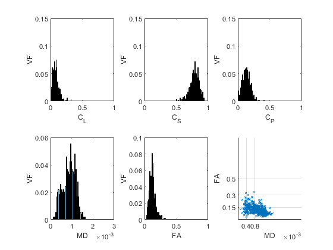
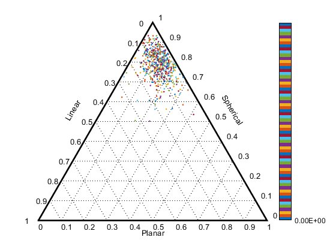
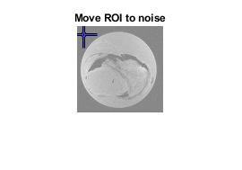

Contents
This code aims to analyze the metrics outputted from the DTI pipeline.
Specifically: FA, MD, Cl, Cs, Cp, and westin shapes are visualised. SNR for DWI images is also calculated for the tissue, media, and background.
% % % % % % % % % % % % % % % % % % % % % % % % % % % % % % % % % % % % % % clc; clear; close all % *Change this input* based on what you've named the base nifti. pe_dir = 'W'; % This loads in each nifti metric, converts from character to 3D double % (y pixel by x pixel by number of slices) then reshapes into a single % vector of all values. fa=load_nii(sprintf('%s_FA.nii',pe_dir));fa=fa.img;fa=reshape(fa,1,[]); md=load_nii(sprintf('%s_MD.nii',pe_dir));md=md.img;md=reshape(md,1,[]); adc=load_nii(sprintf('%s_ADC.nii',pe_dir));adc=adc.img;adc=reshape(adc,1,[]); cl=load_nii(sprintf('%s_CL.nii',pe_dir));cl=cl.img;cl=reshape(cl,1,[]); cp=load_nii(sprintf('%s_CP.nii',pe_dir));cp=cp.img;cp=reshape(cp,1,[]); cs=load_nii(sprintf('%s_CS.nii',pe_dir));cs=cs.img;cs=reshape(cs,1,[]); % ^ can add in RA, TA, etc. in same manner if other metrics to be analysed.
Resizing and sorting the metrics
fa = nonzeros(fa); md = nonzeros(md); adc = nonzeros(adc); cl = nonzeros(cl); cp = nonzeros(cp); cs = nonzeros(cs); % Takes the metrics and based on the FA (which is assumed to % be masked for the desired regions) finds the non-zero terms, and % transposes a vector of the FA values in the masked region. i=find (fa>0 & fa <1); fa=fa(i);fa=fa'; cl=cl(i);cl=cl'; cp=cp(i);cp=cp'; cs=cs(i);cs=cs'; % The MD is thresholded md=md(i);md=md'; md(md>=3e-3)=3e-3;
Creating histrograms and FA vs. MD plot.
figure subplot(2,3,1) histogram(cl,50,'Normalization','probability');ylabel('VF');xlabel('C_L') xlim([0 1]); ylim([0 .15]) subplot(2,3,2) histogram(cs,50,'Normalization','probability');ylabel('VF');xlabel('C_S') xlim([0 1]); ylim([0 .15]) subplot(2,3,3) histogram(cp,50,'Normalization','probability');ylabel('VF');xlabel('C_P') xlim([0 1]); ylim([0 .15]) subplot(2,3,4) histogram(md,50,'Normalization','probability');ylabel('VF');xlabel('MD') xlim([0 3e-3]) subplot(2,3,5); ylim([0 .2]) histogram(fa,50,'Normalization','probability');ylabel('VF');xlabel('FA') xlim([0 1]); ylim([0 .1]) subplot(2,3,6) scatter(md, fa, 10,'x');ylabel('FA');xlabel('MD'); grid on xlim([0 3e-3]); ylim([0 1]) xticks([0.0004 0.0008]);yticks([.15 .3 .5]); % All values are saved. save('metricsW.mat','fa','md','cl','cp','cs') % Mean + std for metrics of interest for quick checks. means = [mean(fa) mean(md) mean(adc)]'; stds = [std(fa) std(md) std(adc)]';
Westin shape diagram.
% Uses an open source function for generating 3 seperate ternary plots. d = linspace(0,1,length(cl)); % Scatter Westin Shape figure; [h,hg,htick]=terplot; colormap(lines) %or diff colormap [hd,hcb]=ternaryc(cl,cp,cs,d,'.'); hlabels=terlabel('Linear','Planar','Spherical'); p(1).MarkerSize = 100;
Calculate SNR
clear;clc;close all; % Change as needed to input the desired dataset. dwi_nifti=load_nii(sprintf('dti.nii')); dwi_nifti=dwi_nifti.img; b0_data = dwi_nifti(:,:,35,1); bX_data = dwi_nifti(:,:,35,2); imshow(b0_data) title('Move ROI to tissue') h = imrect(gca, [2 4 2 4]); setResizable(h,0) position = wait(h); tissue_b0 = imcrop(b0_data,position); tissue_b800 = imcrop(bX_data,position); imshow(b0_data) title('Move ROI to PBS') h2 = imrect(gca, [2 4 2 4]); setResizable(h2,0) position2 = wait(h2); pbs_b0 = imcrop(b0_data,position2); pbs_b800 = imcrop(bX_data,position2); imshow(b0_data) title('Move ROI to noise') h3 = imrect(gca, [2 4 2 4]); setResizable(h3,0) position3 = wait(h3); noise_b0 = imcrop(b0_data,position3); noise_b800 = imcrop(bX_data,position3); mean_tissue_sb0 = mean(tissue_b0); std_tissue_sb0 = std(double(tissue_b0)); mean_tissue_sb800 = mean(tissue_b800); std_tissue_sb800 = std(double(tissue_b800)); mean_pbs_sb0 = mean(pbs_b0); std_pbs_sb0 = std(double(pbs_b0)); mean_pbs_sb800 = mean(pbs_b800); std_pbs_sb800 = std(double(pbs_b800)); mean_noise_sb0 = mean(noise_b0); std_noise_sb0 = std(double(noise_b0)); mean_noise_sb800 = mean(noise_b800); std_noise_sb800 = std(double(noise_b800)); b0_SNR = mean_tissue_sb0/mean_noise_sb0; b800_SNR = mean_tissue_sb800/std_noise_sb800; DWI_SNR = b0_SNR/b800_SNR; T = table([b0_SNR; b800_SNR; DWI_SNR], 'VariableNames',... {'SNR'},'RowNames', {'b0', 'bX','DWI'})
T =
3×1 table
SNR
______
b0 5.2089
bX 11.499
DWI 0.453
